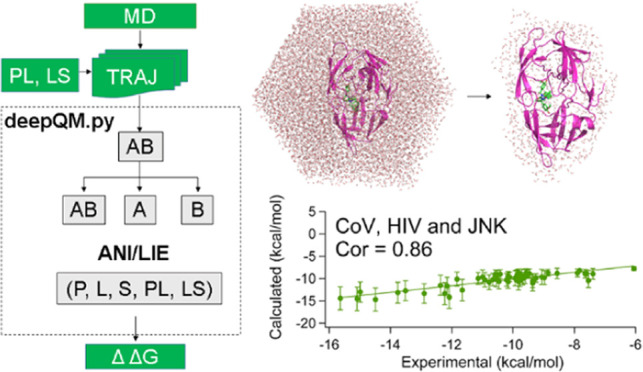
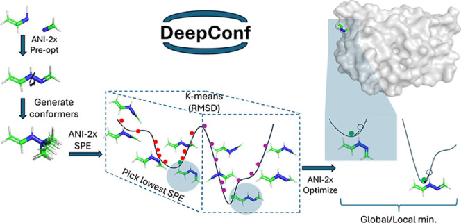
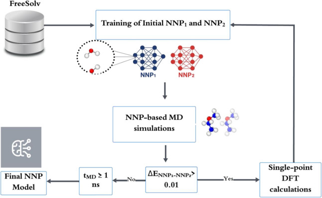
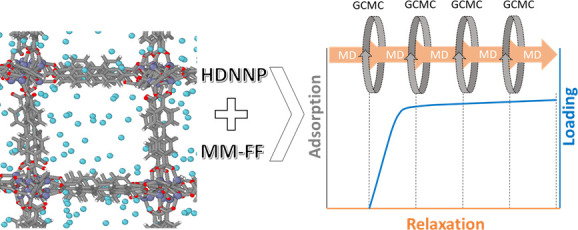

Software
Open-source tools that accompany our papers, developed by Ömer Tayfuroğlu and co-workers in the group and hosted on GitHub. Each one is free to use; please cite the paper listed with it.
-

Graphical abstract, Akkus et al., J. Chem. Inf. Model. 2022. CC BY 4.0. deepQM ANI-LIE
End-state binding free energies from MD trajectories. deepQM evaluates protein–ligand and ligand–solvent interaction energies with ANI-2x neural network potentials at roughly ωB97X/6-31G* accuracy and combines them in a linear interaction energy model. Works with GROMACS 2018+ and ASE.
Cite: Akkus et al., J. Chem. Inf. Model. 2022 · Temel et al., J. Comput. Chem. 2023
-

Graphical abstract, Tayfuroglu et al., J. Chem. Inf. Model. 2025. CC BY 4.0. DeepConf
Low-energy conformer search for small molecules. DeepConf generates conformers with RDKit, ranks and optimises them with ANI-family potentials, AIMNet2, NequIP models or Gaussian 16, and returns a small, representative set for docking and MD. ANI potentials reproduce bioactive conformations with a mean RMSD below 0.5 Å.
-

Scheme 1, Mutlu et al., J. Phys. Chem. B 2025. CC BY 4.0. deepPotential
Workflow for building data-efficient E(3)-equivariant NequIP potentials by active learning, used to reach DFT accuracy for gas-phase and implicit-water simulations and solvation free energies of FreeSolv molecules.
-

Related work: graphical abstract, Tayfuroglu et al., Langmuir 2025. CC BY 4.0. deepMOF
Pretrained neural network potentials for the IRMOF-n series (n = 1, 4, 6, 7, 10), for simulating thermal and mechanical behaviour of metal–organic frameworks at DFT accuracy.
Cite: Tayfuroglu et al., Phys. Chem. Chem. Phys. 2022 · See also: Tayfuroglu et al., Langmuir 2025